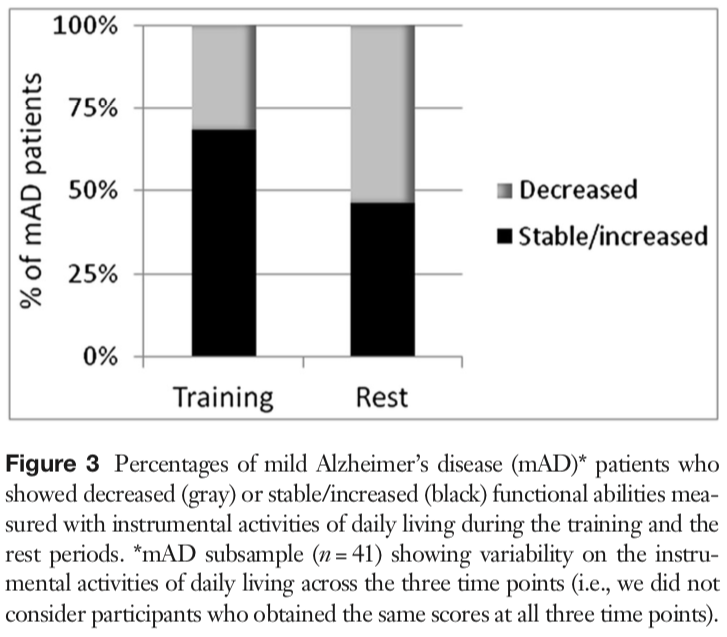

Alzheimer’s App
A mobile application designed for cognitive training and reminders for elderly patients with neurodegenerative conditions (i.e. Alzheimer’s disease) and status updates for their families.
Mobile App Development (2013)
This paper supports your idea that a mobile app could be useful for Alzheimer’s patients. It also does a great job outlining the challenges you might encounter in implementing this idea.
“Mobile App Development and Usability Research to Help Dementia and Alzheimer Patients.” Yamagata et al. Institute of Electical and Electronics Engineers. 2013. [.pdf]
Big Idea: People with Alzheimer’s can get agitated, especially in the evening, but some evidence supports that they can be comforted by visual and auditory stimulation. Keep in mind: these patients might have dementia-related issues with fine motor coordination, so your app design needs to be very easy to physically navigate.
Universal Design (2015)
You guys can take inspiration from this paper addressing different elements of the neurodegenerative experience with app functions:
“Universal Design with Mobile App Development: Bridging the Gap for the Forgotten Populations.” Nezerwa et al. Institute of Electical and Electronics Engineers. 2015. [.pdf]
Big Idea: There are already some good examples of apps to draw from, especially in terms of consolidating features. This paper emphasizes that auditory and visual stimulation are both needed for optimal cognitive stimulation! If you have time, glance through this one.
Mobile Reminders (2015)
This is actually not a great paper (it’s written in pretty broken English), but it has some good ideas regarding a system that allows family members to track food, water, and prescription medication intake.
“A Mobile Reminder System for Elderly and Alzheimer’s patients.” Dalbouh et al. International Journal of Computer Science Issues. 2015. [.pdf]
Big Idea: You’ve got a lot of good options in terms of user interface design and functionality, and it’s a great selling point that deploying this kind of app through the App Store makes for a far broader reach than physician-centered care.
Protecting Cognition (2016)
This paper actually used a computer-based cognitive training tool to confirm that it had a positive memory effect in Alzheimer’s patients.
“Protecting cognition from aging and Alzheimer’s disease: a computerized cognitive training combined with reminiscence therapy.” Barban et al. International Journal of Geriatric Psychiatry. 2016. [.pdf]

Big Idea: This just quantifies that your idea could improve functional abilities in Alzheimer’s disease patients. Check out this paper if you’re interested in what they included in their cognitive training.
Brain Plasticity (2017)
This study uses functional MRI to demonstrate that cognitive training slows down Alzheimer’s disease progression. It’s a super-dense paper, but it’s good evidence that this app would actually work.
“A Pilot Study on Brain Plasticity of Functional Connectivity Modulated by Cognitive Training in Mild Alzheimer’s Disease and Mild Cognitive Impairment.” Barban et al. Brain Sciences. 2017. [.pdf]
Big Idea: The figures and text are both so intensely science-y in this paper that I’m not going to bother including either, but it showed that cognitive training improved “whole-brain functional connectivity in subjects at risk of developing AD and in patients during the early stages of this disease.”
Promise of Technology (2018)
This is a full thesis (almost 70 pages long), but it has a lot of great content. Specifically, it has a well-researched 5-page review of current technologies relating to improving cognition in Alzheimer’s disease and a research proposal including cognitive training, physical training, companionship, and daily task reminders.
“Seniors Living with Alzheimer’s Disease and Dementia: The Promise of App Technology.” Lu. Major Papers. 2018. [.pdf]
Big Idea: No figures or text from this one, either, but it justifies that seniors are increasingly adept at using technology (and so diseases of the elderly like dementia should be addressed with technology).
Summary Recommendations
People with Alzheimer’s disease (and those elderly patients who are at risk of developing the disease) benefit from combined visual and auditory stimulation, especially during periods of agitation (“sundowning” at dusk). Look through examples in the literature regarding app design and function and come up with a blend of app capabilities informed by the needs of these patients. Don’t forget – elderly people with dementia will probably struggle to use a touchscreen, so this needs to be as easy to navigate as is possible.